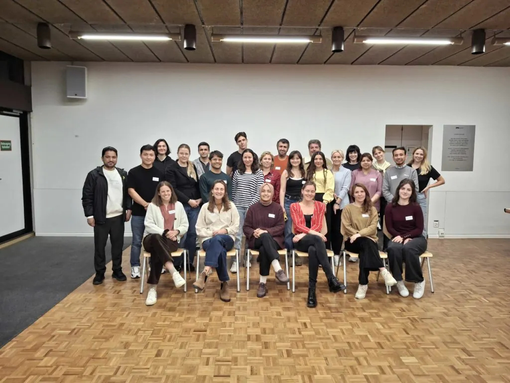

Teilnehmende des SEET-Studienförderprogramms halten inne, um nachzudenken
SEET Study support programme participants pause for reflection
Les participants du programme SEET prennent le temps de réfléchir
Laut dem Cambridge Dictionary bedeutet das Verb „reflektieren” „sorgfältig nachdenken, insbesondere über Möglichkeiten und Meinungen”.

Am Abend des 16. Oktober traf sich die Kohorte des SEET-Studienförderprogramms 2025/26 im ETH-Pavillon in Zürich, um über ihre jeweiligen Mentor:in-Mentee-Partnerschaften zu reflektieren – fast fünf Monate nach der Auftaktveranstaltung Ende Mai. Eine kleine Anzahl nahm aufgrund von Arbeits- und Studienverpflichtungen auch online teil.
Dank der von Agatha und Julia vom SEET-Programmteam organisierten Eisbrecher-Runde füllte sich der Raum innerhalb weniger Minuten mit Gesprächen und Gelächter. Mentees, Mentor:innen und SEET-Freiwillige wurden in Gruppen eingeteilt und gebeten, eine Person zu nennen, die sie am liebsten zum Essen einladen oder öffentlich sprechen hören würden.
Es wurden Namen von Politiker:innenn, Sportler:innen, Künstler:innen und Wissenschaftler:innen genannt. Eine Teilnehmerin erklärte, dass es in ihrer Gruppe einen gemeinsamen Nenner gab: Alle diskutierten Namen waren durch ihre individuellen Fähigkeiten vereint, in verschiedenen Phasen der modernen Geschichte Frieden zu stiften. Ein Thema, das bei vielen Mentees aufgrund ihrer persönlichen Erfahrungen als Geflüchtete besonderen Anklang fand.
Im Hauptteil des Abends bildeten die Mentees und Mentor:innen Paare, in denen sie 45 Minuten lang ihre ursprünglichen Ziele überdenken sollten.
Hielten sie sich weiterhin auf Kurs oder mussten sie ihre Ziele anpassen? Konnten ihre Partnerschaften weiter verbessert werden, und wenn ja, wie? Gab es etwas, das sie gemeinsam anders machen sollten, um sicherzustellen, dass im Frühjahr 2026 jeder Mentee die besten Chancen hatte, seine persönlichen Ziele erfolgreich zu erreichen?
Ein Mentor erklärte offen, wie bereichernd, aber auch herausfordernd seine persönlichen Erfahrungen bisher gewesen seien, und stellte fest, dass sich die anfänglichen Sprachbarrieren aufgelöst hätten, was den Fortschritt seiner eigenen Mentoring-Beziehung verbessert habe.
Die Eingewöhnung in ein neues Land ist ein komplexer kultureller und sozialer Prozess. Neben dem Erlernen einer neuen Sprache und neuer Bräuche können sich einige Mentees bei ihrer Ankunft in der Schweiz zunächst isoliert fühlen, insbesondere wenn sie ohne andere Familienmitglieder ankommen. Eine Mentee, die ursprünglich aus Afghanistan stammt, konnte sich dank der finanziellen Unterstützung von SEET ein iPad kaufen. Dies half ihr nicht nur bei ihren Studienzielen, sondern erleichterte ihr auch den Kontakt zu Bekannten, die sie während ihres Studiums aus verschiedenen Teilen der Schweiz kennengelernt hatte, sowie zu anderen Mitgliedern der afghanischen Diaspora.
Als sich der Abend seinem Ende näherte, erinnerten Agatha und Julia die Anwesenden daran, dass ihre Teilnahme am SEET-Programm auf ein zweites oder drittes Jahr verlängert werden kann, sofern sie bestimmte Kriterien in Bezug auf ihr Studium erfüllen.
Der Nobelpreisträger und ETH-Absolvent Albert Einstein sagte einmal: „Versuche nicht, ein erfolgreicher Mensch zu werden, sondern versuche, ein wertvoller Mensch zu werden.“
Bei der gemeinsamen Zeit mit den männlichen und weiblichen Teilnehmern wurde deutlich, dass die Mentor:innen das Konzept „wertvoll sein“ in ihren Partnerschaften ernst nehmen, während viele der Mentees leidenschaftlich davon sprachen, dem Land, das ihnen eine neue Heimat geboten hat, etwas zurückgeben zu wollen.
Ein Mentor und ein Mentee aus demselben Land, die vor vielen Jahren in ihrer Heimat befreundet waren, wurden im Mai dieses Jahres durch SEET wieder zusammengeführt. „Wir sagen, die Welt ist rund, also werden wir uns immer wiederfinden“, sagte einer von ihnen mit einem breiten Lächeln im Gesicht, bevor er versprach, uns ihre Geschichte bald für einen neuen Blogbeitrag mitzuteilen. Die Abschlussveranstaltung für die diesjährige Kohorte findet ebenfalls Ende März 2026 im ETH Alumni Pavillon statt. Wir werden wieder dabei sein, um von den Erfolgen der Mentees und den Erfahrungen der Mentoren aus dem Programm zu hören.
According to the Cambridge Dictionary, the verb ‘reflect’ means ‘to think carefully, especially about possibilities and opinions.’
On the evening of Thursday 16 October at the ETH Pavillion in Zürich, the 2025/26 SEET study support programme cohort met to reflect on their respective mentor-mentee partnerships, almost five months since the kick-off event in late May. A few also joined online due to work and study commitments.
Within a few minutes, the room was quickly filled with the sound of conversation and laughter, thanks to the icebreaker session organised by Agatha and Julia from SEET’s Program Team. Mentees, mentors and SEET volunteers were grouped together and asked to choose one person who they would most like to invite to dinner or hear speak publicly.
The names of politicians, sportspeople, artists and academics were all put forward. One participant explained that in her group, there was a common thread: all names discussed were united by their individual abilities to foster peace during different stages of modern history. A topic that particularly resonated with many of the mentees’ personal experiences as refugees.
The main component of the evening saw the mentees and mentors break out into their pairings where over the course of forty-five minutes, they were asked to review their original goals.
Did they consider themselves to still be on track, or did they need to adjust their targets? Could their partnerships be further improved, and if so, how? Is there anything that they should collectively do differently, to ensure that come Spring 2026, each mentee has the best chance to successfully achieve their personal goals?
One mentor candidly explained how enriching but also challenging his personal experience had been to date, noting how initial language barriers had dissolved, thus enhancing the progress of his own mentee relationship.
Assimilating to a new country is a complex cultural and social process. As well as learning a new language and customs, some mentees can initially feel isolated when arriving in Switzerland, especially if they arrive without other family members. For one mentee who originally hails from Afghanistan, SEET’s funding support enabled her to purchase an iPad. This not only helped with her studying goals but also facilitated her ability to stay in contact with acquaintances she has met from different parts of Switzerland through her studies, as well as fellow members of the Afghan diaspora.
As the evening progressed towards its conclusion, Agatha and Julia reminded the participants that their participation in SEET’s programme can be extended to a second or third year, pending them meeting specific criteria related to their studies.
Nobel Prize winning ETH alumni Albert Einstein once said: “Try not to become a man of success; rather try to become a man of value.”
Spending time with male and female participants alike, it was clear that the mentors are taking the concept of ‘being of value’ to heart in their partnerships, whilst many of the mentees spoke passionately about wanting to ‘give back’ to the country that offered them a new home.
One mentor and mentee pairing from the same country – who were friends many years ago in their homeland – were re-united in May this year through SEET. “We say the world is round, so we’ll always find each other again” one said with a big smile on his face, before promising to share their story with us soon for a new blog post. The wrap-up event for this year’s participants will also take place at the ETH Alumni Pavillion at the end of March 2026. We’ll be there once again to hear about mentee achievements and lessons learned by mentors, from their respective experiences of the programme.
Laut dem Cambridge Dictionary bedeutet das Verb „reflektieren” „sorgfältig nachdenken, insbesondere über Möglichkeiten und Meinungen”.
Am Abend des 16. Oktober traf sich die Kohorte des SEET-Studienförderprogramms 2025/26 im ETH-Pavillon in Zürich, um über ihre jeweiligen Mentor:in-Mentee-Partnerschaften zu reflektieren – fast fünf Monate nach der Auftaktveranstaltung Ende Mai. Eine kleine Anzahl nahm aufgrund von Arbeits- und Studienverpflichtungen auch online teil.
Dank der von Agatha und Julia vom SEET-Programmteam organisierten Eisbrecher-Runde füllte sich der Raum innerhalb weniger Minuten mit Gesprächen und Gelächter. Mentees, Mentor:innen und SEET-Freiwillige wurden in Gruppen eingeteilt und gebeten, eine Person zu nennen, die sie am liebsten zum Essen einladen oder öffentlich sprechen hören würden.
Es wurden Namen von Politiker:innenn, Sportler:innen, Künstler:innen und Wissenschaftler:innen genannt. Eine Teilnehmerin erklärte, dass es in ihrer Gruppe einen gemeinsamen Nenner gab: Alle diskutierten Namen waren durch ihre individuellen Fähigkeiten vereint, in verschiedenen Phasen der modernen Geschichte Frieden zu stiften. Ein Thema, das bei vielen Mentees aufgrund ihrer persönlichen Erfahrungen als Geflüchtete besonderen Anklang fand.
Im Hauptteil des Abends bildeten die Mentees und Mentor:innen Paare, in denen sie 45 Minuten lang ihre ursprünglichen Ziele überdenken sollten.
Hielten sie sich weiterhin auf Kurs oder mussten sie ihre Ziele anpassen? Konnten ihre Partnerschaften weiter verbessert werden, und wenn ja, wie? Gab es etwas, das sie gemeinsam anders machen sollten, um sicherzustellen, dass im Frühjahr 2026 jeder Mentee die besten Chancen hatte, seine persönlichen Ziele erfolgreich zu erreichen?
Ein Mentor erklärte offen, wie bereichernd, aber auch herausfordernd seine persönlichen Erfahrungen bisher gewesen seien, und stellte fest, dass sich die anfänglichen Sprachbarrieren aufgelöst hätten, was den Fortschritt seiner eigenen Mentoring-Beziehung verbessert habe.
Die Eingewöhnung in ein neues Land ist ein komplexer kultureller und sozialer Prozess. Neben dem Erlernen einer neuen Sprache und neuer Bräuche können sich einige Mentees bei ihrer Ankunft in der Schweiz zunächst isoliert fühlen, insbesondere wenn sie ohne andere Familienmitglieder ankommen. Eine Mentee, die ursprünglich aus Afghanistan stammt, konnte sich dank der finanziellen Unterstützung von SEET ein iPad kaufen. Dies half ihr nicht nur bei ihren Studienzielen, sondern erleichterte ihr auch den Kontakt zu Bekannten, die sie während ihres Studiums aus verschiedenen Teilen der Schweiz kennengelernt hatte, sowie zu anderen Mitgliedern der afghanischen Diaspora.
Als sich der Abend seinem Ende näherte, erinnerten Agatha und Julia die Anwesenden daran, dass ihre Teilnahme am SEET-Programm auf ein zweites oder drittes Jahr verlängert werden kann, sofern sie bestimmte Kriterien in Bezug auf ihr Studium erfüllen.
Der Nobelpreisträger und ETH-Absolvent Albert Einstein sagte einmal: „Versuche nicht, ein erfolgreicher Mensch zu werden, sondern versuche, ein wertvoller Mensch zu werden.“
Bei der gemeinsamen Zeit mit den männlichen und weiblichen Teilnehmern wurde deutlich, dass die Mentor:innen das Konzept „wertvoll sein“ in ihren Partnerschaften ernst nehmen, während viele der Mentees leidenschaftlich davon sprachen, dem Land, das ihnen eine neue Heimat geboten hat, etwas zurückgeben zu wollen.
Ein Mentor und ein Mentee aus demselben Land, die vor vielen Jahren in ihrer Heimat befreundet waren, wurden im Mai dieses Jahres durch SEET wieder zusammengeführt. „Wir sagen, die Welt ist rund, also werden wir uns immer wiederfinden“, sagte einer von ihnen mit einem breiten Lächeln im Gesicht, bevor er versprach, uns ihre Geschichte bald für einen neuen Blogbeitrag mitzuteilen. Die Abschlussveranstaltung für die diesjährige Kohorte findet ebenfalls Ende März 2026 im ETH Alumni Pavillon statt. Wir werden wieder dabei sein, um von den Erfolgen der Mentees und den Erfahrungen der Mentoren aus dem Programm zu hören.